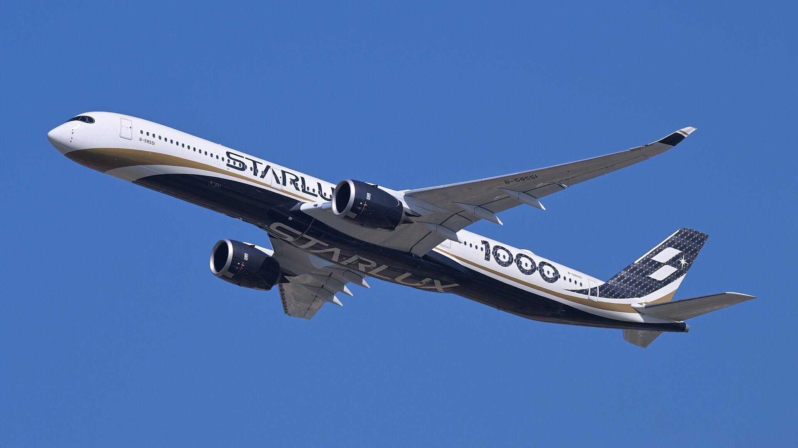
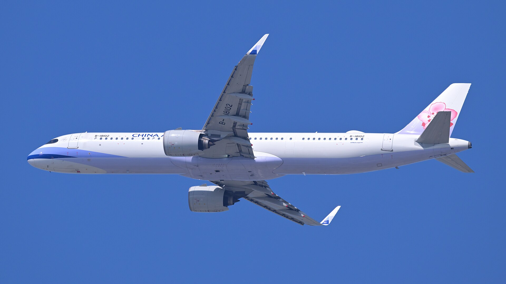
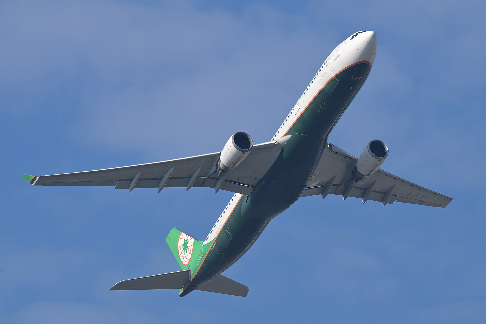
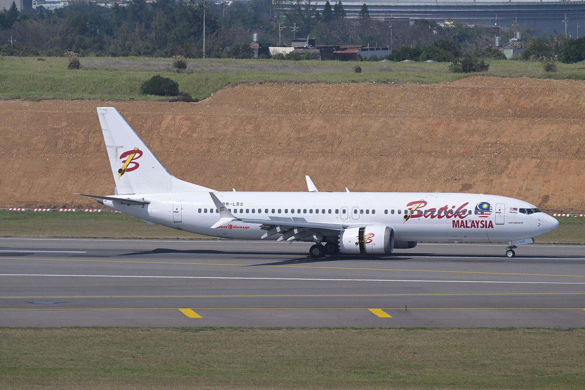
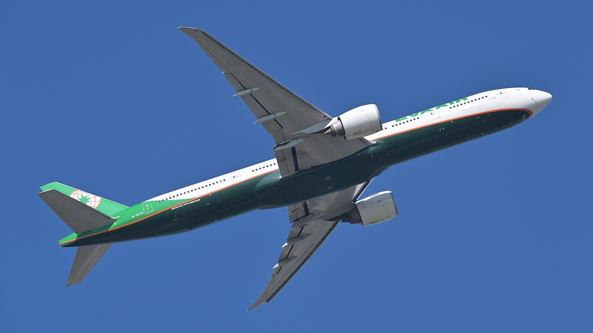
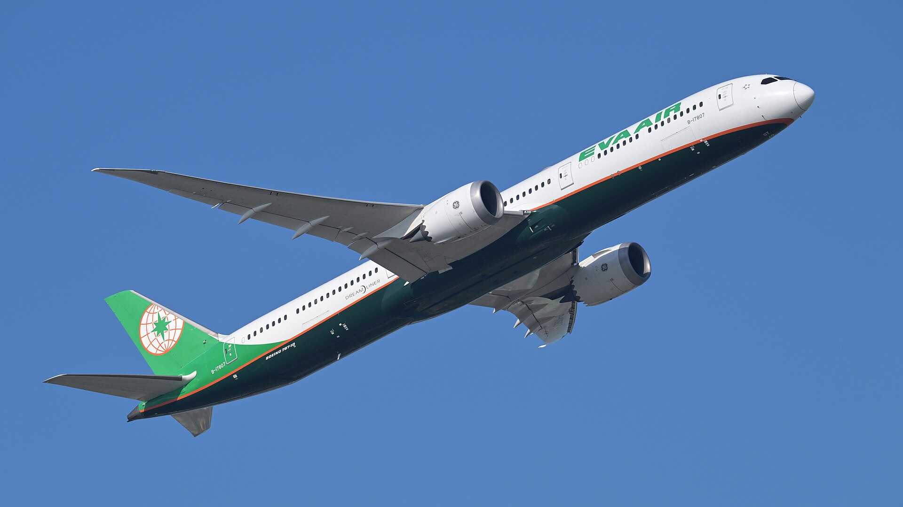
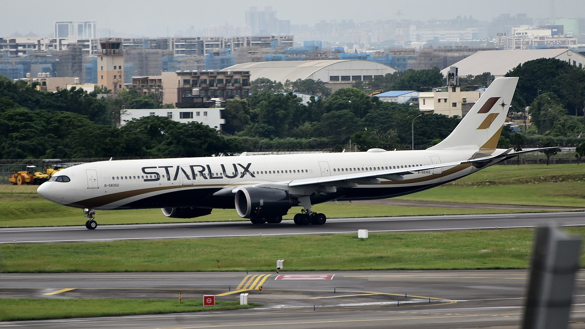
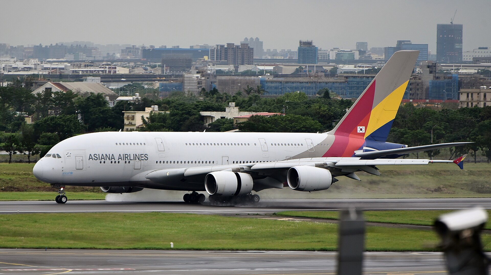
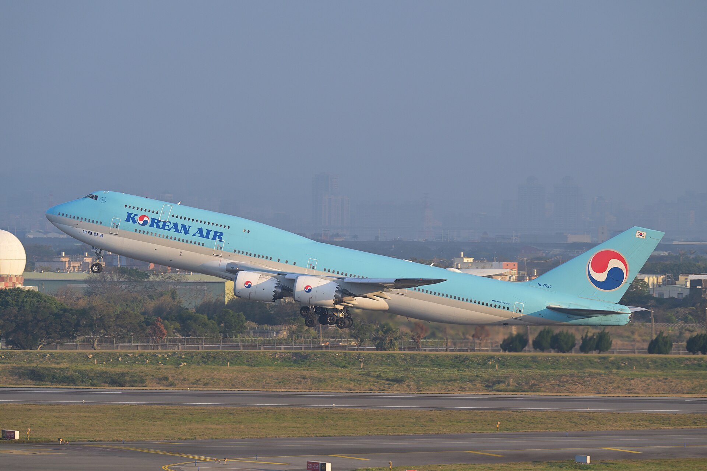
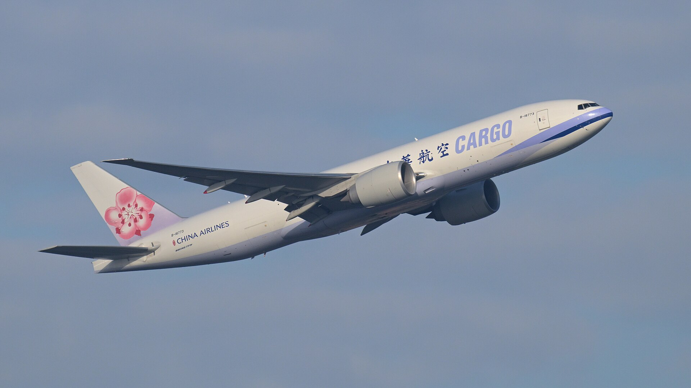

機身：單走道或雙走道？
窄而細長的通常是短中程窄體機；寬大的機身多半能飛更遠、載更多人。

先學會怎麼看
航空公司會換塗裝，但飛機的骨架不會。從這三個線索開始最可靠。
窄而細長的通常是短中程窄體機；寬大的機身多半能飛更遠、載更多人。
737 的部分型號引擎底部較扁；777 的發動機則大得非常有存在感。
翼尖像飛機的簽名。A350、787 和 737 MAX 都有不同的收尾方式。
桃園機場觀察名單
「常見」會隨航空公司班表與機隊調度改變；這六種是很實用的入門觀察名單。

AIRBUS01 · 窄體機
最常見的區域線主力，像一支細長的飛行鉛筆。

AIRBUS02 · 寬體機
圓潤、安靜的雙走道老將，區域線與中長程都能勝任。
03 · 寬體機
新世代長程客機，最醒目的特徵就是駕駛艙的黑色「墨鏡」。

BOEING04 · 窄體機
A320 系列的老對手，世界各地短程航線上的熟面孔。

BOEING05 · 寬體機
又長、又有力；兩具巨型發動機是它最有氣勢的招牌。

BOEING06 · 寬體機
科技感十足的夢幻客機，窗戶大、機翼柔軟，飛行時會明顯上彎。
再多認識四架
它們不一定每天都以同樣頻率出現，但辨識度很高。 A380 是特別訪客；747 與 777F 則讓我們走進桃園繁忙的貨運世界。

AIRBUS07 · 新世代寬體機
熟悉的 A330 換上新引擎、新機翼，還戴上了新世代的黑色眼罩。

特別訪客08 · 雙層巨無霸
全球最大的量產客機，從機頭到機尾幾乎都是上下兩層。

BOEING09 · 空中女王
機頭上方隆起的「駝峰」讓它成為航空史上最容易認出的飛機之一。

CARGO10 · 大型貨機
把 777 的長程能力變成空中貨運主力，外表看起來就像「沒有窗戶的 777」。
登機前的小測驗
五題全對，就頒給你今天的「桃機觀察員」徽章。
第 1 題，共 5 題